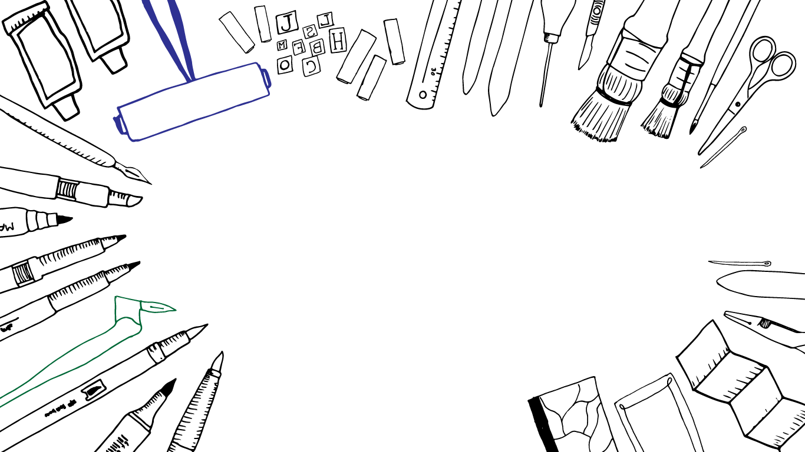

Here we are celebrating the art of handmade crafts. scroll to the right to get a sense of what it means to add the human touch to an item.
The San Francisco Center for the Book is a center of inspiration for the book arts world, featuring the art & craft of letterpress printing, bookbinding, and artists bookmaking. We are dedicated to the art of the book!
The San Francisco Center for the Book is a 501(c)(3) non-profit organization that fosters the joy of books and bookmaking, the history, artistry, and continuing presence of books in our culture and enduring importance as a medium of self-expression. We provide both a home for Bay Area book artists and a place where the wider community can discover book arts. Everyone is welcome here, experienced practitioners and newcomers alike.
San Francsico Center for the Book offers 400 workshops annually, which offer learning opportunities at all levels: from introductory classes, to focused advanced and master courses spanning the range of bookbinding and letterpress printing techniques, from traditional methods to cutting-edge printing techniques and experimental book forms.
Exhibitions at San Francisco Center for the Book are designed to inform and inspire visitors. Free public programs include opening receptions for exhibitions in the gallery, book release parties for our publications, gallery talks, tours, open houses, mixers and other community events includingthe annual Roadworks Steamroller Printing Festival and Holiday Fair.
